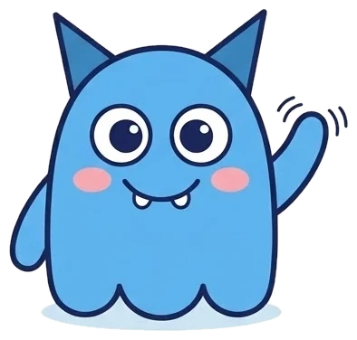
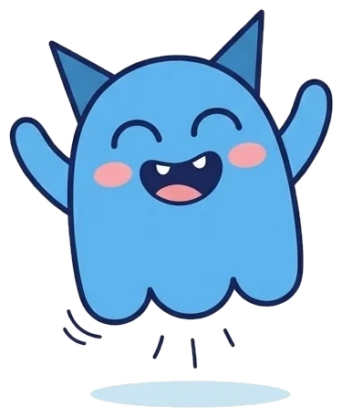

<!DOCTYPE html>
<html lang="es">
<head>
<meta charset="utf-8">
<script src="mova-gate.js"></script>
<meta name="viewport" content="width=device-width, initial-scale=1, viewport-fit=cover">
<meta name="theme-color" content="#F5F3FA">
<title>Diagnóstico de entrada · MOVA Lectoescritura</title>
<link rel="preconnect" href="https://fonts.googleapis.com"><link rel="preconnect" href="https://fonts.gstatic.com" crossorigin>
<link href="https://fonts.googleapis.com/css2?family=Bricolage+Grotesque:opsz,wght@12..96,600;12..96,700;12..96,800&family=Plus+Jakarta+Sans:wght@400;500;600;700;800&display=swap" rel="stylesheet">
<style>
:root{--bg:#F5F3FA;--ink:#1A1B2E;--sub:#6B6E85;--lime:#D3F36B;--pink:#FF8FC8;--lila:#ECE7FF;--lilaInk:#3A2C78;--rosa:#FFE3F1;--limeSoft:#F1FAD0;--line:#E4E0EE}
*{box-sizing:border-box;-webkit-tap-highlight-color:transparent}
html,body{margin:0;background:var(--bg);color:var(--ink);font-family:"Plus Jakarta Sans","Century Gothic",sans-serif}
h1,h2,h3{font-family:"Bricolage Grotesque","Plus Jakarta Sans",sans-serif;letter-spacing:-.02em;margin:0}
button{font-family:inherit;color:var(--ink);cursor:pointer}
.wrap{max-width:520px;margin:0 auto;min-height:100vh;display:flex;flex-direction:column;padding-bottom:env(safe-area-inset-bottom)}
.hero{background:var(--ink);color:#fff;padding:22px 20px 26px;border-radius:30px;margin:calc(16px + env(safe-area-inset-top)) 16px 0;display:flex;align-items:flex-end;gap:10px}
.hero .tx{flex:1;display:flex;flex-direction:column;gap:8px}
.hero h1{font-size:23px;font-weight:800;line-height:1.2}
.hero p{margin:0;font-size:13px;opacity:.85;line-height:1.45}
.hero img{width:96px;height:117px;object-fit:contain;flex:0 0 auto;margin-bottom:-6px}
.pill{align-self:flex-start;display:inline-block;font-size:11px;font-weight:700;padding:5px 11px;border-radius:999px;background:var(--ink);color:#fff}
.pill.l{background:var(--lime);color:var(--ink);padding:4px 10px}
.body{flex:1;padding:18px 20px 24px;display:flex;flex-direction:column;gap:16px}
.topbar{padding:calc(20px + env(safe-area-inset-top)) 20px 0;display:flex;flex-direction:column;gap:12px}
.topbar .r{display:flex;align-items:center;justify-content:space-between;gap:10px}
.count{font-size:12px;color:var(--sub)}
.lbl{font-size:13px;font-weight:700}
.field{font-size:14px;background:#fff;border:2px solid var(--line);border-radius:14px;padding:12px;min-height:48px;display:flex;align-items:center;justify-content:space-between;gap:10px}
.field button{border:0;background:var(--lila);font-size:12px;font-weight:700;padding:7px 11px;border-radius:999px}
.grades{display:grid;grid-template-columns:repeat(6,minmax(0,1fr));gap:6px}
.grades button{font-weight:700;font-size:14px;min-height:44px;border-radius:12px;border:2px solid var(--line);background:#fff}
.grades button.on{border-color:var(--pink);background:var(--pink)}
.box{background:#fff;border:2px solid var(--line);border-radius:22px;padding:14px 16px;display:flex;flex-direction:column;gap:10px}
.steps{display:flex;flex-direction:column;gap:8px}
.steps div{display:flex;align-items:center;gap:10px;font-size:13px;line-height:1.35}
.steps i{font-style:normal;width:30px;height:30px;border-radius:10px;display:flex;align-items:center;justify-content:center;font-weight:800;font-size:13px;flex:0 0 auto}
.tip{background:var(--lila);border-radius:18px;padding:12px 14px;font-size:12.5px;line-height:1.45}
.cta{margin-top:auto;border:0;background:var(--lime);font-weight:800;font-size:15px;text-align:center;padding:16px;border-radius:18px;width:100%}
.cta:disabled{opacity:.45}.cta.pink{background:var(--pink)}.cta.dk{background:var(--ink);color:#fff}
.sec{border:2px solid var(--line);background:#fff;font-weight:700;font-size:14px;text-align:center;padding:13px;border-radius:18px;width:100%}
.link{border:0;background:none;font-size:13px;font-weight:700;padding:10px;text-decoration:underline}
.trail{background:#fff;border:2px solid var(--line);border-radius:20px;padding:12px 14px;display:flex;flex-direction:column;gap:8px}
.trail .who{font-size:12px;font-weight:700}
.trail .st{display:flex;align-items:center;gap:8px;font-size:12px}
.trail .st b{width:22px;height:22px;border-radius:50%;display:flex;align-items:center;justify-content:center;font-weight:800;font-size:11px;flex:0 0 auto}
.trail .st.ok b{background:var(--lime)}.trail .st.no b{background:var(--rosa)}.trail .st.now{font-weight:700}.trail .st.now b{background:var(--pink)}
.stage{flex:1;min-height:340px;background:#fff;border:2px solid var(--line);border-radius:28px;display:flex;flex-direction:column;align-items:center;justify-content:center;gap:12px;padding:20px;text-align:center}
.stage img{width:74px;height:91px;object-fit:contain}
.stage .ask{font-size:13px;color:var(--sub)}
.word{font-size:72px;font-weight:800;letter-spacing:1px;line-height:1}
.word.m{font-size:28px;line-height:1.25;letter-spacing:0}
.chip{background:var(--lila);color:var(--lilaInk);font-size:11px;font-weight:700;padding:4px 10px;border-radius:999px}
.yn{display:grid;grid-template-columns:repeat(2,minmax(0,1fr));gap:10px}
.yn button{min-height:64px;border:0;border-radius:18px;display:flex;align-items:center;justify-content:center}
.yn .y{background:var(--lime)}.yn .n{background:var(--pink)}
.notes{display:flex;flex-direction:column;gap:6px}
.chips{display:flex;flex-wrap:wrap;gap:6px}
.chips button{font-size:12px;font-weight:600;min-height:40px;padding:0 12px;border-radius:999px;border:2px solid var(--line);background:#fff}
.chips button.on{background:var(--lila);border-color:var(--lilaInk)}
.foot{margin:0;font-size:12px;color:var(--sub);line-height:1.45}
.text{font-size:21px;line-height:1.65;font-weight:600;text-align:left}
.text i{font-style:normal;border-radius:6px;padding:0 2px}
.text i.end{background:var(--lime)}.text i.after{color:#B4B2C6}
.timer{font:800 46px "Bricolage Grotesque";text-align:center}
.cnt{display:flex;align-items:center;justify-content:center;gap:14px}
.cnt button{width:52px;height:52px;border-radius:16px;border:0;background:var(--pink);font:800 24px "Plus Jakarta Sans"}
.cnt b{font-size:30px;font-weight:800;min-width:44px;text-align:center}
.q{display:flex;align-items:center;gap:8px;padding:12px 0;border-top:2px solid var(--line);flex-wrap:wrap}
.q:first-child{border-top:0;padding-top:0}
.q p{flex:1;margin:0;font-weight:600;font-size:14px;line-height:1.4}
.q .yb{width:46px;height:44px;border-radius:14px;border:2px solid var(--line);background:#fff;display:flex;align-items:center;justify-content:center}
.q .yb.y.on{background:var(--lime);border-color:var(--lime)}.q .yb.n.on{background:var(--pink);border-color:var(--pink)}
.q .chips{width:100%}
.duo{display:grid;grid-template-columns:repeat(2,minmax(0,1fr));gap:10px}
.lvc{border-radius:22px;padding:14px;display:flex;flex-direction:column;gap:6px}
.lvc span{font-size:12px;font-weight:700}.lvc b{font-size:30px;font-weight:800;line-height:1}.lvc small{font-size:12px;line-height:1.35}
.kp{display:flex;flex-direction:column}.kp b{font-size:22px;font-weight:800}.kp span{font-size:12px;color:var(--sub)}
.tags{display:flex;flex-wrap:wrap;gap:6px}.tags span{background:var(--lila);font-size:12px;font-weight:600;padding:5px 11px;border-radius:999px}
.ruta{background:var(--limeSoft);border-radius:22px;padding:14px 16px;display:flex;flex-direction:column;gap:4px}
.ruta b{font-size:13px}.ruta span{font-size:12.5px;line-height:1.45}
.adj{display:flex;align-items:center;gap:8px;font-size:12px;color:var(--sub);font-weight:600}
.adj span{flex:1}
.adj button{width:36px;height:36px;border-radius:12px;border:2px solid var(--line);background:#fff;font-weight:800;font-size:16px}
.adj em{font-style:normal;font-weight:800;color:var(--ink);font-size:14px;min-width:22px;text-align:center}
.done{background:var(--limeSoft);border-radius:18px;padding:14px;font-size:13px;font-weight:700;text-align:center}
.toast{position:fixed;left:50%;bottom:24px;transform:translateX(-50%);background:var(--ink);color:#fff;padding:12px 18px;border-radius:14px;font-weight:700;font-size:13px;z-index:99}
@media print{.noprint{display:none!important}body,html{background:#fff}.wrap{min-height:0}}
</style>
</head>
<body>
<div class="wrap" id="app"></div>
<script>
"use strict";
/* ===== Contenido del diagnóstico (documento "Diagnóstico de entrada · Reactivos y reglas") ===== */
const LEVELS=["Sonidos y vocales","Primeras sílabas","Sílabas directas","Sílabas inversas y mixtas","Sílabas trabadas y diptongos","Casos especiales","Oraciones y fluidez","Textos y comprensión"];
const ear=w=>({t:w,ear:1});
const B={
 1:[{t:"e"},{t:"a"},{t:"U"},{t:"o"},{t:"I"},ear("oso"),ear("uva"),ear("isla"),ear("elote"),ear("araña")],
 2:[{t:"ma"},{t:"pe"},{t:"si"},{t:"lo"},{t:"mamá"},{t:"sopa"},{t:"lima"},{t:"mipo",ps:1},{t:"lasu",ps:1},{t:"pemo",ps:1}],
 3:[{t:"fo"},{t:"ñu"},{t:"che"},{t:"dedo"},{t:"nube"},{t:"foca"},{t:"cama"},{t:"tafe",ps:1},{t:"bujo",ps:1},{t:"nifa",ps:1}],
 4:[{t:"al"},{t:"es"},{t:"in"},{t:"sol"},{t:"pan"},{t:"papel"},{t:"isla"},{t:"silpo",ps:1},{t:"dorfa",ps:1},{t:"esmo",ps:1}],
 5:[{t:"plato"},{t:"brazo"},{t:"flor"},{t:"tigre"},{t:"piano"},{t:"nieve"},{t:"cuatro"},{t:"plami",ps:1},{t:"frelo",ps:1},{t:"griona",ps:1}],
 6:[{t:"queso"},{t:"guitarra"},{t:"gente"},{t:"cereza"},{t:"ratón"},{t:"perro"},{t:"hilo"},{t:"quime",ps:1},{t:"guelo",ps:1},{t:"cerpa",ps:1}]
};
const TIPS={4:"Error frecuente: omitir la consonante final (pa por pan).",5:"Fíjate si agrega una vocal (palato) u omite la segunda consonante (pato).",6:"Fíjate si lee la u de qu/gu, si lee la h, o si lee ge y ce con sonido fuerte."};
const B7={ora:["El sol sale por la mañana.","¿Dónde está mi mochila azul?","¡Qué rico huele el pan!"],
 txt:"Mi tío Beto tiene una granja. En la granja hay vacas, patos y un caballo café. Cada mañana, Beto les da de comer. El caballo se llama Trueno y corre muy rápido. Los domingos, mi hermana y yo vamos a visitarlo. ¡Nos encanta subir a Trueno!",
 qs:[["¿Qué animales hay en la granja?"],["¿Cómo se llama el caballo?"],["¿Qué día van a visitarlo?"]]};
const B8={txt:"El domingo, Valeria y su abuelo fueron al parque a volar un papalote rojo. El viento soplaba fuerte y el papalote subió tan alto que parecía un punto en el cielo. De pronto, unas nubes grises taparon el sol y empezó a sentirse frío. El abuelo miró hacia arriba y dijo: «Es hora de bajarlo». Valeria jaló el hilo con cuidado, vuelta por vuelta, hasta que el papalote quedó en sus manos. Apenas guardaron todo en la mochila, comenzaron a caer gotas gruesas sobre el pasto. Corrieron hasta el carro riéndose y llegaron empapados. En casa, la abuela los esperaba con chocolate caliente y una toalla para cada uno. Valeria pensó que había sido el mejor domingo del mes.",
 qs:[["¿A qué fueron Valeria y su abuelo al parque?","Literal"],["¿De qué color era el papalote?","Literal"],["¿Qué pasó justo después de que guardaron todo en la mochila?","Secuencia"],["¿Por qué el abuelo dijo que era hora de bajar el papalote?","Inferencia"],["¿Cómo crees que se sentía Valeria al final del día? ¿Por qué?","Inferencia"]]};
/* Palabras correctas por minuto mínimas por grado (propuesta inicial, se ajusta con la prueba piloto) */
const PPM_MIN={1:35,2:60,3:85,4:100,5:115,6:125};
const START={1:1,2:2,3:4,4:4,5:7,6:7};
/* Dictado en papel: 4 palabras y una oración por grado; cada reactivo indica el nivel que comprueba */
const DICT={
 1:[["a · e · i · o · u",1],["mesa",2],["pato",3],["sol",4],["Mi mamá me mima.",2]],
 2:[["mesa",2],["nube",3],["papel",4],["plato",5],["Mi papá come pan.",4]],
 3:[["árbol",4],["tren",5],["queso",6],["perro",6],["La niña juega en el parque.",6]],
 4:[["árbol",4],["tren",5],["queso",6],["perro",6],["La niña juega en el parque.",6]],
 5:[["blusa",5],["guitarra",6],["hombre",6],["cereza",6],["¿Quién trajo el regalo de cumpleaños?",7]],
 6:[["blusa",5],["guitarra",6],["hombre",6],["cereza",6],["¿Quién trajo el regalo de cumpleaños?",7]]
};
const NOTES_R=["Omitió letra","Agregó vocal","Cambió letra","Silabeó","Se tardó más de 3 s"];
const NOTES_W=["Omitió letra","Cambió letra","Juntó palabras","Ortografía (b/v, h, s/c/z)","Sin mayúscula o punto"];

/* ===== Estado ===== */
const $=s=>document.querySelector(s), app=$("#app");
const esc=s=>String(s).replace(/[&<>"]/g,c=>({"&":"&amp;","<":"&lt;",">":"&gt;",'"':"&quot;"}[c]));
const first=n=>String(n||"").trim().split(/\s+/)[0]||"tu alumno";
let S=null;
function me(){try{if(!localStorage.getItem("mova_student"))return null;return window.MovaAuth&&MovaAuth.user()}catch(e){return null}}
function fresh(){return{grade:null,start:0,t0:0,res:{},cur:0,i:0,errs:0,ok:0,items:[],note:{},flu:{},dict:[],adj:0,saved:false}}
function toast(m){const d=document.createElement("div");d.className="toast";d.textContent=m;document.body.appendChild(d);setTimeout(()=>d.remove(),2600)}
function elapsed(){if(!S.t0)return"";const m=Math.floor((Date.now()-S.t0)/60000);return m+" min"}

/* ===== Piezas comunes ===== */
const SVG_Y='<svg width="34" height="34" viewBox="0 0 24 24" fill="none" stroke="#1A1B2E" stroke-width="3" stroke-linecap="round" stroke-linejoin="round" aria-hidden="true"><path d="M5 12.5l4.5 4.5L19 7.5"/></svg>';
const SVG_N='<svg width="30" height="30" viewBox="0 0 24 24" fill="none" stroke="#1A1B2E" stroke-width="3" stroke-linecap="round" stroke-linejoin="round" aria-hidden="true"><path d="M6.5 6.5l11 11M17.5 6.5l-11 11"/></svg>';
const sY=s=>SVG_Y.replace(/34/g,s),sN=s=>SVG_N.replace(/30/g,s);
const SHORT=["Sonidos y vocales","Primeras sílabas","Sílabas directas","Inversas y mixtas","Trabadas y diptongos","Casos especiales","Oraciones y fluidez","Textos y comprensión"];
function kind(it){if(it.ps)return"Palabra inventada";if(S.cur===1)return it.ear?"Sonido inicial":"Vocal";const t=it.t;if(S.cur===4)return t.length<=2?"Sílaba inversa":"Sílabas mixtas";if(S.cur===5)return/^(piano|nieve)$/.test(t)?"Diptongo":t==="cuatro"?"Trabada y diptongo":"Sílaba trabada";if(S.cur===6)return({queso:"qu",guitarra:"gu y rr",gente:"ge suena j",cereza:"ce suena s",ratón:"r fuerte",perro:"rr",hilo:"h muda"})[t]||"Caso especial";return t.length<=3?"Sílaba":"Palabra"}
function topbar(count){
 const u=me(),keys=Object.keys(S.res).map(Number).filter(k=>k!==S.cur).sort((a,b)=>a-b);
 return`<div class="topbar noprint"><div class="r"><span class="pill">Modo maestra</span><span class="count">${count||""}</span></div>
 <div class="trail"><div class="r" style="display:flex;justify-content:space-between;align-items:center"><span class="who">${esc(u?u.name||u.username:"")}, ${S.grade}°</span><button class="link" id="bk" style="padding:0;font-size:12px">Salir</button></div>
 ${keys.map(k=>`<div class="st ${S.res[k].pass?"ok":"no"}"><b>${k}</b>${SHORT[k-1]}: ${S.res[k].pass?"listo":"por practicar"}</div>`).join("")}
 ${S.cur?`<div class="st now"><b>${S.cur}</b>${SHORT[S.cur-1]}: ahora</div>`:""}</div></div>`;
}
function bindBack(){const b=$("#bk");if(b)b.onclick=()=>{if(confirm("¿Salir del diagnóstico? No se guardará lo que lleva."))home()}}

/* ===== Inicio ===== */
function home(){
 const u=me();S=fresh();
 const steps=g=>`<span class="lbl">Así empezará para ${g}°</span><div class="steps">
  <div><i style="background:#ECE7FF">1</i><span><b>Lectura:</b> empieza en ${SHORT[START[g]-1].toLowerCase()} y sube o baja según sus respuestas</span></div>
  <div><i style="background:#FFE3F1">2</i><span><b>Dictado en papel:</b> 4 palabras y una oración</span></div>
  <div><i style="background:#F1FAD0">3</i><span><b>Perfil:</b> nivel de lectura y nivel de escritura</span></div></div>`;
 app.innerHTML=`<div class="hero"><div class="tx"><span class="pill l">Modo maestra</span><h1>Diagnóstico de entrada</h1><p>Presencial, alrededor de 15 minutos. Solo la maestra puede iniciarlo.</p></div></div>
 <div class="body">
  <div style="display:flex;flex-direction:column;gap:6px"><span class="lbl">Alumno</span>
   ${u?`<div class="field"><span>${esc(u.name||u.username)}</span><button id="swap">Cambiar</button></div>`
     :`<div class="field"><span style="color:var(--sub)">Inicia sesión con su usuario</span><button id="login">Iniciar sesión</button></div>`}</div>
  <div style="display:flex;flex-direction:column;gap:8px"><span class="lbl">Grado escolar</span>
   <div class="grades">${[1,2,3,4,5,6].map(g=>`<button type="button" data-g="${g}">${g}°</button>`).join("")}</div></div>
  <div class="box" id="plan" style="display:none"></div>
  <div class="tip">Sostén el dispositivo tú. El alumno lee en voz alta de la pantalla y tú marcas cada respuesta.</div>
  <button class="cta" id="go" disabled>Comenzar diagnóstico</button>
 </div>`;
 app.querySelectorAll("[data-g]").forEach(b=>b.onclick=()=>{S.grade=+b.dataset.g;app.querySelectorAll("[data-g]").forEach(x=>x.classList.toggle("on",x===b));
  const p=$("#plan");p.style.display="";p.innerHTML=steps(S.grade);$("#go").disabled=!me()});
 const lg=$("#login");if(lg)lg.onclick=()=>{MovaAuth.login();waitUser(null)};
 const sw=$("#swap");if(sw)sw.onclick=()=>{if(!confirm("¿Cambiar de alumno? Se cerrará la sesión de "+first(u.name)+" en este dispositivo."))return;const old=u.token;try{localStorage.removeItem("mova_student")}catch(e){}MovaAuth.login();waitUser(old)};
 $("#go").onclick=()=>{S.start=START[S.grade];S.t0=Date.now();openBlock(S.start)};
}
function waitUser(old){const iv=setInterval(()=>{let ls=null;try{ls=JSON.parse(localStorage.getItem("mova_student")||"null")}catch(e){}const u=me();if(ls&&u&&u.token&&u.token!==old){clearInterval(iv);home();toast("Listo: "+first(u.name))}},600);setTimeout(()=>clearInterval(iv),300000)}

/* ===== Flujo adaptativo ===== */
function openBlock(b){S.cur=b;S.i=0;S.errs=0;S.ok=0;S.items=[];S.note={};if(b<=6)item();else if(b===7)b7a();else fluency(8)}
function item(){
 const it=B[S.cur][S.i];
 app.innerHTML=topbar(`Palabra ${S.i+1} de 10`)+`<div class="body" style="gap:14px;padding-top:16px">
  <div class="stage">${it.ear?`<span class="ask">Di en voz alta y pregunta con qué sonido empieza</span><span class="word">${esc(it.t)}</span>`
   :`<span class="ask">Lee en voz alta</span><span class="word">${esc(it.t)}</span>`}<span class="chip">${kind(it)}</span></div>
  <div class="yn"><button type="button" class="y" id="y" aria-label="Leyó bien">${SVG_Y}</button><button type="button" class="n" id="n" aria-label="Necesita apoyo">${SVG_N}</button></div>
  <div class="notes"><span style="font-size:12px;font-weight:700">Notas (opcional)</span><div class="chips">${NOTES_R.map(n=>`<button type="button" data-n="${n}">${n}</button>`).join("")}</div></div>
  <p class="foot">${TIPS[S.cur]?TIPS[S.cur]+" ":""}El diagnóstico sube o baja solo, según cada respuesta.</p></div>`;
 bindBack();
 const sel=new Set();app.querySelectorAll("[data-n]").forEach(b=>b.onclick=()=>{const n=b.dataset.n;sel.has(n)?sel.delete(n):sel.add(n);b.classList.toggle("on")});
 const mark=ok=>{S.items.push({t:it.t,ok,ps:!!it.ps,notes:[...sel]});sel.forEach(n=>S.note[n]=(S.note[n]||0)+1);ok?S.ok++:S.errs++;S.i++;
  if(S.errs>=3||S.i>=10)closeBlock(S.errs<3);else item()};
 $("#y").onclick=()=>mark(true);$("#n").onclick=()=>mark(false);
}
function closeBlock(pass,extra){
 S.res[S.cur]=Object.assign({pass,ok:S.ok,errs:S.errs,items:S.items,notes:S.note},extra||{});
 const b=S.cur,r=S.res;let next=null;
 if(pass){if(b<8&&!r[b+1])next=b+1}else{if(b>1&&!r[b-1])next=b-1}
 if(Date.now()-S.t0>15*60000&&next){if(!confirm("Ya pasaron 15 minutos. ¿Seguir con el bloque "+next+"? Si eliges Cancelar, se termina aquí."))next=null}
 interstitial(pass,next);
}
function interstitial(pass,next){
 const was=S.cur;
 app.innerHTML=topbar(elapsed())+`<div class="body" style="gap:14px;padding-top:16px">
  <div class="stage">
  <span class="word m">${pass?"¡Nivel superado!":"Este nivel lo vamos a practicar"}</span>
  <span class="ask" style="max-width:300px;line-height:1.45">${next?(next>was?`Sigue con ${SHORT[next-1].toLowerCase()}.`:`Bajamos a ${SHORT[next-1].toLowerCase()} para encontrar desde dónde empezar.`):"La lectura ya quedó ubicada. Ahora sigue el dictado en papel."}</span></div>
  <button class="cta ${pass?"":"pink"}" id="nx">${next?"Continuar":"Ir al dictado"}</button></div>`;
 bindBack();$("#nx").onclick=()=>next?openBlock(next):dictado();
}

/* ===== Bloque 7 · parte A: oraciones ===== */
function b7a(){
 let k=0;const ora=[];
 const draw=()=>{app.innerHTML=topbar(`Oración ${k+1} de 3`)+`<div class="body" style="gap:14px;padding-top:16px">
  <div class="stage"><span class="ask">Lee en voz alta</span><span class="word m">${esc(B7.ora[k])}</span><span class="chip">Entonación de los signos</span></div>
  <div class="yn"><button type="button" class="y" id="y" aria-label="Leyó bien">${SVG_Y}</button><button type="button" class="n" id="n" aria-label="Necesita apoyo">${SVG_N}</button></div>
  <p class="foot">Marca ✓ si respeta la pregunta, la exclamación y el punto.</p></div>`;bindBack();
  const m=ok=>{ora.push({t:B7.ora[k],ok});k++;k<3?draw():fluency(7,ora)};$("#y").onclick=()=>m(true);$("#n").onclick=()=>m(false)};
 draw();
}
/* ===== Lectura cronometrada (bloques 7 y 8) ===== */
function fluency(b,ora){
 const D=b===7?B7:B8,words=D.txt.split(/\s+/);let st=0,iv=null,secs=0,errs=0,last=words.length-1,silab=false,phase="ready";
 const draw=()=>{
  app.innerHTML=topbar(phase==="run"?"Leyendo…":"Lectura de "+words.length+" palabras")+`<div class="body" style="gap:14px;padding-top:16px">
  <div class="box" style="border-radius:28px;padding:18px"><div class="text" id="tx">${words.map((w,i)=>`<i data-i="${i}" class="${phase==="mark"&&i===last?"end":phase==="mark"&&i>last?"after":""}">${esc(w)}</i>`).join(" ")}</div></div>
  <div class="box noprint">${phase==="ready"?`<span class="foot" style="font-size:13px">Pídele que lea en voz alta. Toca <b>Empezar</b> cuando lea la primera palabra.</span><button class="cta dk" id="st">Empezar</button>`:
   phase==="run"?`<div class="timer" id="tm">0:00</div><span class="foot" style="text-align:center">Suma un error cada vez que omita, cambie o agregue algo</span><div class="cnt"><button type="button" id="em" aria-label="Quitar error">−</button><b id="ec">${errs}</b><button type="button" id="ep" aria-label="Sumar error">+</button></div><button class="cta pink" id="sp">Terminó</button>`:
   `<span class="foot" style="font-size:13px">${secs>=60?"Pasó el minuto. <b>Toca la última palabra que leyó.</b>":"Terminó en "+secs+" s. Si no terminó el texto, toca la última palabra que leyó."}</span>
   <div class="cnt"><span class="lbl">Errores</span><button type="button" id="em" aria-label="Quitar error">−</button><b id="ec">${errs}</b><button type="button" id="ep" aria-label="Sumar error">+</button></div>
   <div class="chips"><button type="button" id="sb" class="${silab?"on":""}">Leyó sílaba por sílaba</button></div><button class="cta" id="ok">Siguiente: preguntas</button>`}</div></div>`;
  bindBack();
  const e=$("#em"),p=$("#ep");if(e){e.onclick=()=>{errs=Math.max(0,errs-1);$("#ec").textContent=errs};p.onclick=()=>{errs++;$("#ec").textContent=errs}}
  if(phase==="ready")$("#st").onclick=()=>{phase="run";st=Date.now();draw();iv=setInterval(()=>{secs=Math.floor((Date.now()-st)/1000);const t=$("#tm");if(t)t.textContent=Math.floor(secs/60)+":"+String(secs%60).padStart(2,"0");if(secs>=60){stop();if(navigator.vibrate)navigator.vibrate(200)}},250)};
  if(phase==="run")$("#sp").onclick=stop;
  if(phase==="mark"){app.querySelectorAll("#tx i").forEach(x=>x.onclick=()=>{last=+x.dataset.i;draw()});$("#sb").onclick=()=>{silab=!silab;draw()};
   $("#ok").onclick=()=>{const read=last+1,t=Math.max(1,Math.min(secs,60)),cor=Math.max(0,read-errs);
    questions(b,{read,errs,secs:t,ppm:Math.round(cor*60/t),prec:Math.round(cor/read*100),silab},ora)}}
 };
 const stop=()=>{clearInterval(iv);secs=Math.max(1,Math.round((Date.now()-st)/1000));if(secs>=60)secs=60;phase="mark";draw()};
 draw();
}
function questions(b,flu,ora){
 const D=b===7?B7:B8,ans=D.qs.map(()=>null);
 const draw=()=>{app.innerHTML=topbar("Comprensión")+`<div class="body" style="gap:14px;padding-top:16px">
  <span class="foot" style="font-size:13px">Haz cada pregunta en voz alta, sin que vuelva a ver el texto.</span>
  <div class="box">${D.qs.map((q,i)=>`<div class="q"><p>${i+1}. ${esc(q[0])}${q[1]?` <span class="chip" style="font-size:10px;padding:2px 8px;${q[1]==="Inferencia"?"background:#FFE3F1;color:#1A1B2E":""}">${q[1]}</span>`:""}</p><button type="button" class="yb y ${ans[i]===true?"on":""}" data-i="${i}" data-v="1" aria-label="Correcta">${sY(20)}</button><button type="button" class="yb n ${ans[i]===false?"on":""}" data-i="${i}" data-v="0" aria-label="Incorrecta">${sN(18)}</button></div>`).join("")}</div>
  <button class="cta" id="ok" ${ans.includes(null)?"disabled":""}>Cerrar este nivel</button></div>`;bindBack();
  app.querySelectorAll(".q .yb").forEach(x=>x.onclick=()=>{ans[+x.dataset.i]=x.dataset.v==="1";draw()});
  $("#ok").onclick=()=>{const good=ans.filter(Boolean).length;let pass;
   if(b===7){const o=ora.filter(x=>x.ok).length;pass=o>=2&&flu.prec>=95&&!flu.silab&&good>=2}
   else{const inf=ans[3]||ans[4];pass=flu.prec>=95&&flu.ppm>=PPM_MIN[S.grade]&&good>=4&&inf}
   S.ok=good;S.errs=D.qs.length-good;S.flu[b]=flu;closeBlock(pass,{flu,ora:ora||null,qs:ans})}};
 draw();
}

/* ===== Dictado en papel ===== */
function dictado(){
 const L=DICT[S.grade];S.cur=0;const ans=L.map(()=>null),notes=L.map(()=>new Set());
 const draw=()=>{app.innerHTML=topbar("Dictado en papel")+`<div class="body" style="gap:14px;padding-top:16px">
  <div class="tip">Dicta cada reactivo dos veces, con ritmo natural. Al terminar, revisa la hoja y marca aquí.</div>
  <div class="box">${L.map((d,i)=>`<div class="q"><p style="font-size:18px;font-weight:800">${i+1}. ${esc(d[0])}</p><button type="button" class="yb y ${ans[i]===true?"on":""}" data-i="${i}" data-v="1" aria-label="Bien escrito">${sY(20)}</button><button type="button" class="yb n ${ans[i]===false?"on":""}" data-i="${i}" data-v="0" aria-label="Con errores">${sN(18)}</button>
   ${ans[i]===false?`<div class="chips">${NOTES_W.map(n=>`<button type="button" data-w="${i}" data-n="${n}" class="${notes[i].has(n)?"on":""}">${n}</button>`).join("")}</div>`:""}</div>`).join("")}</div>
  <p class="foot">La ortografía arbitraria (b/v, h, s/c/z) se anota, pero no baja el nivel de escritura.</p>
  <button class="cta" id="ok" ${ans.includes(null)?"disabled":""}>Ver resultado</button></div>`;
  bindBack();
  app.querySelectorAll(".q .yb").forEach(x=>x.onclick=()=>{ans[+x.dataset.i]=x.dataset.v==="1";draw()});
  app.querySelectorAll("[data-w]").forEach(x=>x.onclick=()=>{const s=notes[+x.dataset.w],n=x.dataset.n;s.has(n)?s.delete(n):s.add(n);draw()});
  $("#ok").onclick=()=>{S.dict=L.map((d,i)=>({t:d[0],lvl:d[1],ok:ans[i],notes:[...notes[i]]}));result()}};
 draw();
}

/* ===== Resultado ===== */
function calc(){
 const passed=Object.keys(S.res).filter(k=>S.res[k].pass).map(Number);
 const maxP=passed.length?Math.max(...passed):0,read=Math.min(9,maxP+1);
 const bad=S.dict.filter(d=>!d.ok&&!(d.notes.length&&d.notes.every(n=>/^Ortografía|^Sin mayúscula/.test(n)))).map(d=>d.lvl);
 const top=Math.max(...S.dict.map(d=>d.lvl)),write=bad.length?Math.min(...bad):Math.min(8,top+1);
 const notes={};Object.values(S.res).forEach(r=>Object.entries(r.notes||{}).forEach(([k,v])=>notes[k]=(notes[k]||0)+v));
 S.dict.forEach(d=>d.notes.forEach(n=>notes["Escritura: "+n]=(notes["Escritura: "+n]||0)+1));
 Object.values(S.res).forEach(r=>{if(r.flu&&r.flu.silab)notes["Silabeó"]=(notes["Silabeó"]||0)+1});
 return{maxP,read,write,notes,flu:S.flu[8]||S.flu[7]||null};
}
const NICE={"Omitió letra":"Omite letras al leer","Agregó vocal":"Agrega vocales al leer","Cambió letra":"Cambia letras al leer","Silabeó":"Lee sílaba por sílaba","Se tardó más de 3 s":"Se detiene antes de leer",
 "Escritura: Omitió letra":"Omite letras al escribir","Escritura: Cambió letra":"Cambia letras al escribir","Escritura: Juntó palabras":"Junta palabras al escribir","Escritura: Ortografía (b/v, h, s/c/z)":"Ortografía: b/v, h, s/c/z","Escritura: Sin mayúscula o punto":"Mayúscula y punto"};
function result(){
 const C=calc(),u=me(),nm=first(u&&u.name),lvl=Math.max(1,Math.min(9,C.read+S.adj));
 const tags=Object.entries(C.notes).sort((a,b)=>b[1]-a[1]).slice(0,4).map(([k])=>NICE[k]||k);
 const rd=lvl>8?"Superó los 8 niveles de lectura.":lvl===1?`Empieza en el nivel 1 de lectura`:`Los niveles 1 a ${lvl-1} de lectura quedan logrados. Empieza en el nivel ${lvl} de lectura`;
 app.innerHTML=`<div class="hero" style="padding:22px 20px 20px"><div class="tx" style="gap:6px"><span class="pill l">Modo maestra</span><h1 style="font-size:22px">¡Así lee ${esc(nm)}!</h1><p>${S.grade}° de primaria · ${new Date().toLocaleDateString("es-MX",{day:"numeric",month:"long"})}</p></div></div>
 <div class="body" style="gap:12px">
  <div class="duo">
   <div class="lvc" style="background:#ECE7FF"><span>Lectura</span><b>${lvl>8?"Nivel 8+":"Nivel "+lvl}</b><small>${lvl>8?"Textos y comprensión":LEVELS[lvl-1]}</small></div>
   <div class="lvc" style="background:#FF8FC8"><span>Escritura</span><b>Nivel ${C.write}</b><small>${LEVELS[C.write-1]}</small></div></div>
  <div class="adj noprint"><span>¿Ajustar el nivel de lectura? Úsalo si lo viste nervioso o distraído.</span><button type="button" id="am" aria-label="Bajar nivel">−</button><em>${lvl>8?"8+":lvl}</em><button type="button" id="ap" aria-label="Subir nivel">+</button></div>
  ${S.adj?`<p class="foot" style="margin-top:-6px">Resultado de la app: nivel ${C.read>8?"8+":C.read}. Se guardan los dos.</p>`:""}
  <div class="box" style="display:grid;grid-template-columns:repeat(2,minmax(0,1fr));gap:8px">
   <div class="kp"><b>${C.flu?C.flu.ppm:"—"}</b><span>palabras por minuto</span></div><div class="kp"><b>${C.flu?C.flu.prec+"%":"—"}</b><span>precisión al leer</span></div>
   ${C.flu?"":`<span class="foot" style="grid-column:1/-1">Se miden cuando llega a la lectura cronometrada.</span>`}</div>
  ${tags.length?`<div class="box" style="gap:8px"><span class="lbl">Lo que vamos a fortalecer</span><div class="tags">${tags.map(t=>`<span>${esc(t)}</span>`).join("")}</div></div>`:""}
  <div class="ruta"><b>Su Mi Ruta Lectora</b><span>${rd}${lvl>8?"":` y ${C.write<lvl?"refuerza":"avanza en"} el nivel ${C.write} de escritura.`}</span></div>
  <div class="noprint" style="margin-top:auto;display:flex;flex-direction:column;gap:8px">
   ${S.saved?`<div class="done">Ruta asignada y guardada en el usuario de ${esc(nm)}.</div><button class="cta" id="nw">Siguiente alumno</button>`:`<button class="cta" id="sv">Asignar ruta</button>`}
   <button class="sec" id="pr">Reporte de diagnóstico para la familia</button>
   ${S.saved?"":`<button class="link" id="nw">Volver a empezar</button>`}</div>
 </div>`;
 $("#am").onclick=()=>{if(lvl>1){S.adj--;result()}};$("#ap").onclick=()=>{if(lvl<9){S.adj++;result()}};
 $("#pr").onclick=()=>print();
 $("#nw").onclick=()=>{if(S.saved){const sw=()=>{const o=me()&&me().token;try{localStorage.removeItem("mova_student")}catch(e){}home();MovaAuth.login();waitUser(o)};sw()}else if(confirm("¿Empezar de nuevo sin guardar?"))home()};
 const sv=$("#sv");if(sv)sv.onclick=()=>save(C,lvl,sv);
}
function save(C,lvl,btn){
 if(!me()){toast("Inicia sesión con el usuario del alumno");return}
 btn.disabled=true;btn.textContent="Guardando…";
 const detail={kind:"diagnostico",grado:S.grade,inicio:S.start,minutos:Math.round((Date.now()-S.t0)/60000),
  nivel_lectura:lvl,nivel_lectura_app:C.read,ajuste:S.adj,nivel_escritura:C.write,
  logrados:Array.from({length:Math.min(8,lvl-1)},(_,i)=>i+1),
  ppm:C.flu?C.flu.ppm:null,precision:C.flu?C.flu.prec:null,errores_frecuentes:C.notes,bloques:S.res,dictado:S.dict};
 try{localStorage.setItem("mova_lecto_diag_"+(me().username||"x"),JSON.stringify(Object.assign({fecha:Date.now()},detail)))}catch(e){}
 Promise.resolve(MovaAuth.save("diagnostico-lectura","Diagnóstico de entrada · lectura nivel "+(lvl>8?"8+":lvl)+" · escritura nivel "+C.write,Math.min(8,lvl-1),8,detail))
 .then(ok=>{S.saved=true;result();toast(ok===false?"Sin conexión: se guardará al reconectar":"Guardado")})
 .catch(()=>{S.saved=true;result();toast("Se guardará al reconectar")});
}
window.addEventListener("load",()=>setTimeout(home,50));
</script>
<script src="mova-voice.js"></script>
<script src="mova-auth.js"></script>
</body>
</html>
